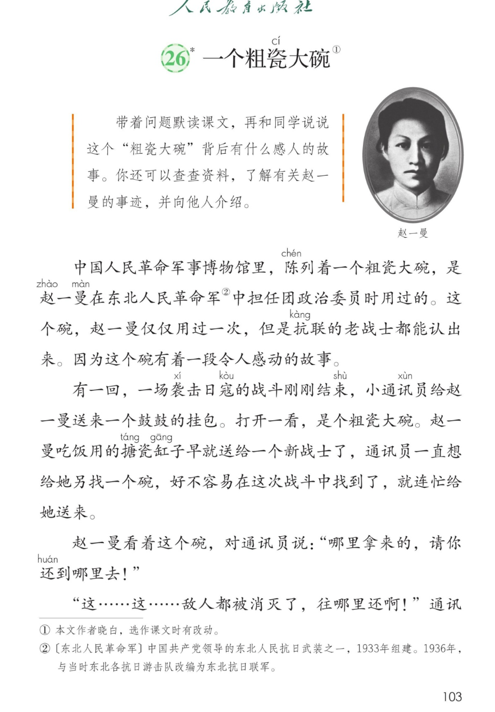
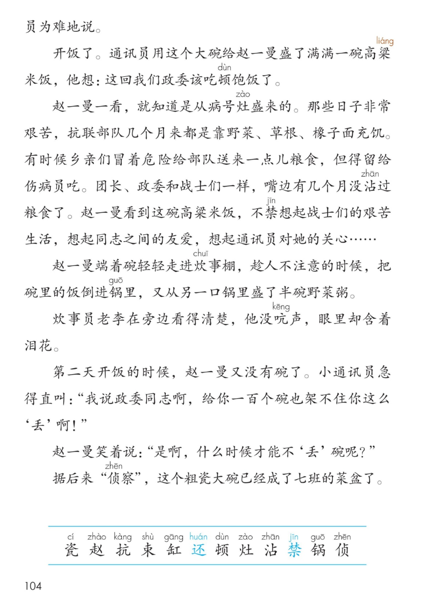

×
🔊 手机听不到声音怎么办？
① 先把手机
媒体音量调大 ，确认没开静音、没连蓝牙耳机；在微信里打开的，点右上角「⋯ → 用浏览器打开」。
② 还是没声音？到应用商店免费下载
Microsoft Edge 浏览器 （它自带朗读发声），用它打开本页面就能出声。
③ 换了 Edge 仍然没声音，说明这部手机的
硬件/系统不支持 网页朗读（多为老旧机型）；近几年买的新手机一般都能正常播放。
→ 打开声音自检
🍚 第 26 课《一个粗瓷大碗》* · 有声图文带读（略读课）
统编版语文 · 第八单元·阅读 · 课本 P103~104 · 晓白 · 素养升级版（对标 2022 课标第二学段）
课文 11 个自然段
素养目标 4
会认字 12
听写词 12
带着问题默读探究 6 卡
深入理解 8 题
🎧 略读课这样学（可随时点任意一句、一个字、一个词单独听）： ① 听读课文 ——一句一句读；再带着问题默读 ：这个粗瓷大碗背后有什么感人的故事？② 学字词 ——12 个会认字，点一个读一个（还、禁是多音字，注意听）。③ 词语·听写 ——听写 12 个词（读两遍→你写→报答案→听示范句），再听 4 组近义词辨析。④ 深入理解 ——8 道题（认知 / 理解 / 运用 / 拓展），先想后看。⑤ 大碗的故事 ——送碗→还碗→倒饭换粥→又“丢”碗→成了菜盆，理一理再讲给同学听。🌟 学习提示（教材原话）：带着问题默读课文，说说碗背后的感人故事；查资料了解赵一曼的事迹并向他人介绍。
📌 本单元语文要素 ——单元导语（P95 照录）：美好的品质，犹如温暖的阳光，带给我们希望和力量 ；要点：学习带着问题默读，理解课文内容 ；学写一件简单的事 。本课是略读课（课题带 *） ：学习提示交给你三个任务——带着问题默读、讲碗背后的故事、查资料介绍赵一曼，试着自己完成。
🀄 文化自信
🀄 文化自信
读赵一曼与粗瓷大碗的故事，走近东北抗日联军的英雄岁月，致敬为民族解放献身的先烈。
🗣 语言运用
🗣 语言运用
认识 12 个生字；积累粗瓷、抗联、侦察等词语；按顺序把碗背后的故事讲清楚，并向他人介绍查到的赵一曼事迹。
💡 思维能力
💡 思维能力
学习带着问题默读，理清碗的经历这条线索，体会两个“丢”字和引号里的言外之意。
🎨 审美创造
🎨 审美创造
抓住倒饭换粥、老李含泪等细节，感受无声的感动，把英雄的品格讲给别人听。
点段前的 ①②③ 听整段
🔁 跟读模式：关
👁 隐藏注音（自测用）
字卡上的拼音标的是本课要认的字，读音来自课本生字表
🎤 朗读要求（老师标准） 还、禁 是多音字；对话 ：赵一曼的话干脆坚定，通讯员的话带着着急；引号 要读出趣味；笑声里轻轻收尾 。
📌 学习提示（教材原话照录） 默读 课文，再和同学说说这个“粗瓷大碗”背后有什么感人的故事 。你还可以查查资料 ，了解有关赵一曼 的事迹，并向他人介绍。
🤫 默读小提示（带着问题默读——本单元核心本领） 听读 ——点句子听老师读；第二步 带着问题默读 ——不出声、不指读，边读边理一理碗的经历 ；第三步 讲故事 ——按送碗、还碗、倒饭换粥、又“丢”碗、成了菜盆的顺序讲给同学听。
①
中国人民革命军事博物馆里，陈列着一个粗瓷大碗，是赵一曼在东北人民革命军中担任团政治委员时用过的。
这个碗，赵一曼仅仅用过一次，但是抗联的老战士都能认出来。
因为这个碗有着一段令人感动的故事。
📌 这一段讲：总起：军事博物馆里陈列着赵一曼在东北人民革命军任团政治委员时用过的粗瓷大碗；她仅用过一次，老战士都能认出——因为这个碗有着一段令人感动的故事。
②
有一回，一场袭击日寇的战斗刚刚结束，小通讯员给赵一曼送来一个鼓鼓的挂包。
打开一看，是个粗瓷大碗。
赵一曼吃饭用的搪瓷缸子早就送给一个新战士了，通讯员一直想给她另找一个碗，好不容易在这次战斗中找到了，就连忙给她送来。
📌 这一段讲：送碗：战斗刚结束，小通讯员送来鼓鼓的挂包——里面是个粗瓷大碗；赵一曼的搪瓷缸子早送给新战士，通讯员好不容易找到碗就连忙送来。
③
赵一曼看着这个碗，对通讯员说：哪里拿来的，请你到哪里去！
📌 这一段讲：还碗：赵一曼看了碗就说，哪里拿来的，请你到哪里去——她要把碗送回原处。
④
这……这……敌人都被消灭了，往哪里还啊！通讯员为难地说。
📌 这一段讲：通讯员为难：这……这……敌人都被消灭了，往哪里还啊！
⑤
开饭了。
通讯员用这个大碗给赵一曼盛了满满一碗高粱米饭，他想：这回我们政委该吃顿饱饭了。
📌 这一段讲：盛饭：开饭了，通讯员用大碗给赵一曼盛了满满一碗高粱米饭——他想，这回政委该吃顿饱饭了。
⑥
赵一曼一看，就知道是从病号灶盛来的。
那些日子非常艰苦，抗联部队几个月来都是靠野菜、草根、橡子面充饥。
有时候乡亲们冒着危险给部队送来一点儿粮食，但得留给伤病员吃。
团长、政委和战士们一样，嘴边有几个月没沾过粮食了。
赵一曼看到这碗高粱米饭，不禁想起战士们的艰苦生活，想起同志之间的友爱，想起通讯员对她的关心……
📌 这一段讲：艰苦岁月：赵一曼知道饭是从病号灶盛来的；部队几个月靠野菜、草根、橡子面充饥，粮食要留给伤病员；她不禁想起战士们的艰苦生活、同志间的友爱和通讯员的关心。
⑦
赵一曼端着碗轻轻走进炊事棚，趁人不注意的时候，把碗里的饭倒进锅里，又从另一口锅里盛了半碗野菜粥。
📌 这一段讲：倒饭换粥：赵一曼趁人不注意，把高粱米饭倒进锅里，自己盛了半碗野菜粥——把粮食留给伤病员。
⑧
炊事员老李在旁边看得清楚，他没吭声，眼里却含着泪花。
📌 这一段讲：老李含泪：炊事员老李看得清楚，没吭声，眼里却含着泪花。
⑨
第二天开饭的时候，赵一曼又没有碗了。
小通讯员急得直叫：我说政委同志啊，给你一百个碗也架不住你这么丢啊！
📌 这一段讲：又没碗了：第二天开饭，赵一曼又没有碗了；通讯员急得直叫——给你一百个碗也架不住你这么丢啊。
⑩
赵一曼笑着说：是啊，什么时候才能不丢碗呢？
📌 这一段讲：笑着答：赵一曼笑着说，是啊，什么时候才能不丢碗呢——风趣的回答里藏着她的坚持。
⑪
据后来侦察，这个粗瓷大碗已经成了七班的菜盆了。
📌 这一段讲：结尾：据后来侦察，这个粗瓷大碗已经成了七班的菜盆了——一只碗，照见赵一曼与战士们同甘共苦的品格。
🤔 想一想（点我可跳过）
P103 右上即赵一曼照片（图注照录）

第 103 页 · 课文（含赵一曼照片）

第 104 页 · 课文后半与认读字
📖 人教版《语文》三年级上册 · 课本第 103~104 页 · 图片仅供个人学习，版权归人民教育出版社所有
📚 注释① 本文作者晓白，选作课文时有改动。注释② 【东北人民革命军】中国共产党领导的东北人民抗日武装之一，1933 年组建。1936 年，与当时东北各抗日游击队改编为东北抗日联军。
点一个字，听读音、词语和在课文里的句子（还、禁是多音字，注意听）
点一行，听读这一组词语
瓷 粗瓷 瓷器 瓷碗
赵 赵一曼 赵州桥
锅 锅里 铁锅 锅盖
侦 侦察 侦探 侦查
读两遍 → 你在纸上写 → 报答案 → 听示范句
准备听写 · 共 12 个词
○ ○ ○
点下面的「开始听写」，听到一个词就写一个词。
▶ 开始听写
🔁 再读一遍
👁 看答案
点词听读，点句子听示范句，再自己说一句
1 粗瓷 本课词
示范句：博物馆里陈列着一个粗瓷大碗。
✏️ 我也能说：哪里陈列着什么。
2 姓赵 本课词
示范句：赵一曼姓赵。
✏️ 我也能说：谁姓什么。
3 抗联 本课词
示范句：抗联的老战士都能认出这个碗。
✏️ 我也能说：谁能认出什么。
4 结束 本课词
示范句：战斗刚刚结束。
✏️ 我也能说：什么刚刚结束。
5 水缸 本课词
示范句：院子里放着一口水缸。
✏️ 我也能说：哪里放着什么。
6 还给 本课词
示范句：请你把碗还给人家。
✏️ 我也能说：请谁把什么还给谁。
7 一顿 本课词
示范句：这回政委该吃顿饱饭了。
✏️ 我也能说：谁该吃顿饱饭了。
8 炉灶 本课词
示范句：炊事棚里支着炉灶。
✏️ 我也能说：哪里支着什么。
9 沾水 本课词
示范句：笔尖在墨水里沾了沾。
✏️ 我也能说：什么在什么里沾了沾。
10 不禁 本课词
示范句：看到这一幕，大家不禁鼓起掌来。
✏️ 我也能说：看到什么，谁不禁怎么样。
11 铁锅 本课词
示范句：锅里盛着半碗野菜粥。
✏️ 我也能说：锅里盛着什么。
12 侦察 本课词
示范句：据后来侦察，碗成了七班的菜盆。
✏️ 我也能说：据什么，怎么样。
相同点 / 不一样在哪 / 各造一句
感动 — 激动
相同：都表示心里起了波澜。
不一样：感动 是被人和事触动而心里发热；激动 是情绪强烈、难以平静。
感动：这个碗有着一段令人感动的故事。
艰苦 — 艰难
相同：都表示不容易。
不一样：艰苦 着重条件差、生活苦；艰难 着重做起来困难、进展慢。
艰苦：那些日子非常艰苦，部队靠野菜充饥。
关心 — 关怀
相同：都表示放在心上、照顾。
不一样：关心 常用于平辈、日常小事；关怀 更庄重，多用于长辈、组织对晚辈。
关心：通讯员对赵一曼非常关心。
连忙 — 急忙
相同：都表示动作快、抓紧。
不一样：连忙 是立刻接着做，语气平和；急忙 心里更急、更慌一些。
连忙：找到了碗，就连忙给她送来。
第一行就是碗的经历，讲故事的顺序
这只碗的经历 被送来 → 被要求还回去 → 盛了高粱米饭 → 被倒饭换粥 → 第二天“丢”了 → 成了七班的菜盆
赵一曼的品质 不搞特殊 与战士同甘共苦 把粮食留给伤病员 关心同志
艰苦生活的证据 靠野菜、草根、橡子面充饥 粮食留给伤病员 嘴边几个月没沾过粮食
带引号的词 “丢”碗——不是真丢，是不肯独自吃好的；“侦察”——不是真侦察，是同志们善意的打趣
点一张卡，听这条默读线索
前两课我们学会了带着问题默读、圈画线索，这一课是自主实践 ——学习提示交给你三个任务，试着自己完成。
❓ 带着问题默读（学习提示任务①）
默读前先问：这只碗是怎么来的、又去了哪里？赵一曼为什么不肯用它吃一顿饱饭？带着问题读，故事自己会理出来。
🥣 碗的经历理线索
送碗 → 还碗 → 盛满一碗高粱米饭 → 倒饭换半碗野菜粥 → 第二天又“丢”了 → 成了七班的菜盆——把碗的六步经历串起来，故事就能讲了。
🍚 三个粮食的证据
靠野菜、草根、橡子面充饥；一点儿粮食留给伤病员；嘴边几个月没沾过粮食——有了这三条，就懂赵一曼为什么倒饭换粥。
🎭 两个“丢”字品趣味
通讯员说架不住你这么丢，赵一曼笑着问什么时候才能不丢碗——一个心疼埋怨，一个风趣坚定，师生读一读特别有味。
📖 查资料介绍赵一曼（学习提示任务③）
提示原文：你还可以查查资料，了解有关赵一曼的事迹，并向他人介绍——查一查她的生平，选一两件事讲给同学听。
🔥 圈画交流
把让你感动的语句画下来，说说这只碗感人在哪里。🌈 答案不唯一。
围绕学习提示三个任务设计
认知 本文的作者是谁？注释①怎么介绍的？看解析
🤔 想一想
解析：
本文作者晓白，选作课文时有改动——注释①写明了。
🌈 答案不唯一，说得有道理都对
认知 注释②介绍的“东北人民革命军”是怎样的队伍？看解析
🤔 想一想
解析：
中国共产党领导的东北人民抗日武装之一，1933年组建；1936年与当时东北各抗日游击队改编为东北抗日联军。🌈 照注释②回答即可。
🌈 答案不唯一，说得有道理都对
理解 这个“粗瓷大碗”背后有什么感人的故事？（学习提示任务②）按顺序说一说。看解析
🤔 想一想
解析：
先按碗的经历理顺序：通讯员送来粗瓷大碗 → 赵一曼要求哪里拿来的还到哪里去 → 通讯员用碗盛了满满一碗高粱米饭 → 赵一曼趁人不注意把饭倒进锅里、换了半碗野菜粥 → 第二天碗又“丢”了 → 据后来侦察，碗成了七班的菜盆。🌈 说清经过、讲出感人处都对。
🌈 答案不唯一，说得有道理都对
理解 赵一曼为什么把高粱米饭倒进锅里，换成半碗野菜粥？看解析
🤔 想一想
解析：
她知道饭是从病号灶盛来的；部队几个月靠野菜、草根、橡子面充饥，一点儿粮食得留给伤病员——她不肯特殊，要把粮食留给最需要的伤病员，和战士们同甘共苦。
🌈 答案不唯一，说得有道理都对
理解 炊事员老李“没吭声，眼里却含着泪花”，他为什么流泪？看解析
🤔 想一想
解析：
他看得清楚：政委把来之不易的粮食让给了伤病员，自己吃野菜粥——被赵一曼与战士同甘共苦的品格深深打动，这泪水里有敬佩也有心疼。
🌈 答案不唯一，说得有道理都对
运用 “给你一百个碗也架不住你这么‘丢’啊！”和“什么时候才能不‘丢’碗呢？”两个“丢”加了引号，说说这样写有趣在哪里。看解析
🤔 想一想
解析：
碗不是真的丢了，是赵一曼又一次把碗让了出去。带引号的“丢”是同志们善意的说法，一埋怨一风趣，一问一答里，赵一曼不搞特殊的坚持和集体的温暖都出来了。🌈 能结合对话说出趣味就好。
🌈 答案不唯一，说得有道理都对
运用 学习提示任务③：查查资料，了解有关赵一曼的事迹，并向他人介绍。看解析
🤔 想一想
解析：
写作支架：第一步，查一查赵一曼的生平（她是东北抗日联团的英雄）；第二步，选一两件最打动你的事；第三步，用自己的话按顺序介绍给同学。🌈 例：赵一曼在战斗中负伤被俘，面对敌人坚贞不屈——介绍时说清时间、事情和你的感受。
🌈 答案不唯一，说得有道理都对
拓展 一只粗瓷大碗，照见了一位英雄的品格。你觉得赵一曼身上最值得学习的是什么？联系课文说说。看解析
🤔 想一想
解析：
🌈 答案不唯一：如不搞特殊、同甘共苦、把方便让给别人；联系课文中她倒饭换粥、笑着答“丢”碗的句子，说出自己的理由就好。
🌈 答案不唯一，说得有道理都对
💬 结构支架：送碗 → 还碗 → 倒饭换粥 → 又“丢”了 → 成了菜盆 。轮到你了：按这个顺序，把碗背后的故事讲给同学听（学习提示任务②）。
点一个角色，听他（她）的台词（朗读稿为课文原句）
🎭 旁白
中国人民革命军事博物馆里，陈列着一个粗瓷大碗，是赵一曼在东北人民革命军中担任团政治委员时用过的。 / 赵一曼端着碗轻轻走进炊事棚，趁人不注意的时候，把碗里的饭倒进锅里，又从另一口锅里盛了半碗野菜粥。
💬 演员要读出人物的心情 ：赵一曼干脆坚定，通讯员着急委屈，旁白平稳深情
🎭 赵一曼
哪里拿来的，请你到哪里去！ / 是啊，什么时候才能不‘丢’碗呢？
💬 演员要读出人物的心情 ：赵一曼干脆坚定，通讯员着急委屈，旁白平稳深情
🎭 通讯员
这……这……敌人都被消灭了，往哪里还啊！ / 我说政委同志啊，给你一百个碗也架不住你这么‘丢’啊！
💬 演员要读出人物的心情 ：赵一曼干脆坚定，通讯员着急委屈，旁白平稳深情
🎭 小老师
讲故事小窍门：按送碗、还碗、倒饭换粥、又丢碗、成了菜盆五步讲；讲的时候加上赵一曼的话和通讯员的话，故事就活了。
💬 演员要读出人物的心情 ：赵一曼干脆坚定，通讯员着急委屈，旁白平稳深情
🎭 朗读者
炊事员老李在旁边看得清楚，他没吭声，眼里却含着泪花。
💬 演员要读出人物的心情 ：赵一曼干脆坚定，通讯员着急委屈，旁白平稳深情
每题给自己打 1~3 颗星
1. 我能正确认读 12 个会认字（分清还、禁的读音）。 ☆ ☆ ☆
2. 我能带着问题默读课文，理清这只碗的经历。 ☆ ☆ ☆
3. 我能按送碗、还碗、倒饭换粥、又丢碗、成了菜盆的顺序，讲出碗背后的感人故事。 ☆ ☆ ☆
4. 我能说出两个“丢”字和“侦察”加引号的趣味，体会赵一曼不搞特殊的品格。 ☆ ☆ ☆
5. 我能查查资料，把赵一曼的事迹介绍给同学。 ☆ ☆ ☆
✍️ 小任务 （教材学习提示原话）：你还可以查查资料 ，了解有关赵一曼的事迹 ，并向他人介绍。查一查 她的生平；第二步，选一两件 最打动你的事；第三步，用自己的话按顺序 介绍给同学。